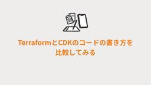
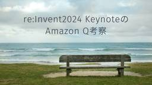
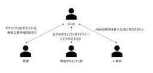
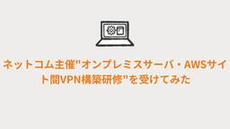
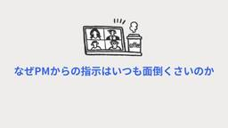
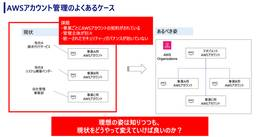
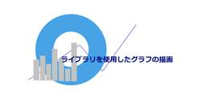
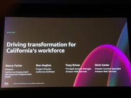
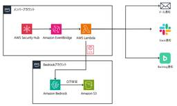

Technology - NRIネットコムBlog
https://tech.nri-net.com/archive/category/Technology
NRIネットコム社員が業務で利用している幅広い技術やナレッジについて紐解くブログメディアです。
フィード

TerraformとCDKのコードの書き方を比較してみる 2
2
Technology - NRIネットコムBlog
本記事は 【Advent Calendar 2024】 20日目②の記事です。 🌟🎄 20①日目 ▶▶ 本記事 ▶▶ 21日目 🎅🎁 こんにちは、後藤です。 今回はIaCツールの代表格であるAWS CDKとTerraformについてのお話です。 AWSリソースの管理にはCloudFormationを使われるシーンもありますが、近年の注目度や利用率を見るとAWS CDKかTerraformを採用しているケースが多いです。そのため当記事ではAWS CDKとTerraformに焦点を当てて比較し、その中でも選択の決め手に大きく関わるコードの書き方に着目したいと思います。 私自身、CDKとTerraf…
1時間前
大学院に進む価値とは？2年目エンジニアが語るキャリアへの影響
Technology - NRIネットコムBlog
本記事は 【Advent Calendar 2024】 20日目①の記事です。 🌟🎄 19日目 ▶▶ 本記事 ▶▶ 20②日目 🎅🎁 こんにちは！牛塚です。私は院卒2年目のエンジニアとして、日々奮闘中です。私が大学院に進学した当時、いろいろな不安を抱えていました。同学年より2年遅れて社会に出ることや、自分の研究が本当に役に立つのかなど、悩んでいたことを振り返りつつ、実際にどうだったのかをお話しします。大学院進学を悩んでいる方の参考になればうれしいです。 同学年と2年間の差がつくことへの不安 研究分野がニッチなので仕事に役立つのかという不安 実際はどうだったのか 同学年と遅れた2年の差は？ ニッ…
1時間前

re:Invent2024 KeynoteのAmazon Q考察 - 開発者の生産性を向上させる新機能群 2
Technology - NRIネットコムBlog
本記事は「Japan AWS Ambassadors Advent Calendar 2024」の19日目の記事です。 こんにちは、志水です。「おもちゃのチャチャチャ」のメロディーで「カボチャのサラダ」と歌っていたところ、3歳の息子が「おもちゃのチャチャチャ（や）でー」とツッコミを入れてくるほど、関西人らしく育ってきました。顔芸も達者なので、今後が楽しみですね。 今回はre:Invent2024 Keynoteで発表されたAmazon Q Developerの新機能群について考察してみます。 はじめに：Amazon Q Developer新機能群の狙い re:Invent 2024のMatt …
17時間前

CCoEって何？AWSでは何をするべき？
Technology - NRIネットコムBlog
本記事は 【Advent Calendar 2024】 19日目の記事です。 🌟🎄 18日目 ▶▶ 本記事 ▶▶ 20日目① 🎅🎁 こんにちは、西内です。 先日のJAWS-UG朝会 #64にて本記事と同じタイトルで登壇を行い、CCoEについて発表しました。 本ブログでは、JAWS-UG朝会 #64で発表した内容を説明していきます。 発表資料 はじめに そもそもなぜクラウドが重要なのか クラウドはシステム開発におけるアジリティ（俊敏性）が高い アジリティの高さはDX（デジタルトランスフォーメーション）推進において非常に重要 一方でアジリティの高さだけを見てはならない CCoEとは CCoEは何を…
1日前
不安でいっぱいな人のためのre:Invent参加手引 1
Technology - NRIネットコムBlog
こんにちは、システムエンジニアの檀上です。 普段は顧客の社内システムの要件調整・基本設計などを担当しています。 さてこの度、アメリカ ラスベガスで開催されたAWS re:Invent 2024に参加させていただきました。 参加をさせていただくことになったものの、過去のre:Invent参加録を見たところ、「一日3時間睡眠が普通」「毎日2万歩から3万歩歩く」「アドレナリンと気合で乗り切れる」みたいな恐ろしい記事をたくさん見かけました。 私はそんなに長時間労働にはなっていない普段の業務でも、体力的にも精神的にもいっぱいいっぱいです。なんとかやってます。毎日が日曜日とは言わんからせめて週休3日になっ…
2日前

ネットコム主催"オンプレミスサーバ・AWSサイト間VPN構築研修"を受けてみた
Technology - NRIネットコムBlog
本記事は 【Advent Calendar 2024】 18日目の記事です。 🌟🎄 17日目 ▶▶ 本記事 ▶▶ 19日目 🎅🎁 はじめに はじめまして、2024年5月にキャリア入社した竹下です。 キャリアで入社した私ですが、エンジニア歴は2年程度と短く知識も偏っていたため、転職活動では研修が手厚い企業を中心に見ていました。 ネットコムでは研修の受講を推奨する文化があり、ネットコム主催の研修だけでなくNRIグループや外部団体などが主催する様々な研修を受講することができます。 今までいくつか研修を受けてきた中で、今回はネットコムのクラウド部主催の"オンプレミスサーバ・AWSサイト間VPN構築研修…
2日前

なぜPMからの指示はいつも面倒くさいのか
Technology - NRIネットコムBlog
本記事は 【Advent Calendar 2024】 17日目の記事です。 🌟🎄 16日目 ▶▶ 本記事 ▶▶ 18日目 🎅🎁 昔は面倒くさいな、と思っていたこと 「スケジュール更新してください」 「お客様から問合せを受けたので確認お願いします」 「いつまでにできますか？」 まとめ こんにちは。金融ITソリューション事業部の佐藤です。 週末は２歳になった息子と近くの公園に遊びに行くのが習慣になってきました。最近息子は滑り台の楽しさを覚えてしまい、１０回くらい一緒に滑るためとても疲れます。子供との体力の差に愕然としています。 昔は面倒くさいな、と思っていたこと いま、あるシステムの基盤更改プロ…
3日前

請求代行を利用していても大丈夫。AWS Organizationsの始め方！！のWebinarを開催します。 27
Technology - NRIネットコムBlog
こんにちは、佐々木です。 直前のブログ告知で恐縮なのですが、明日（2024/12/18）の12時にWebinarで登壇します。 テーマはマルチアカウント管理の始め方ということで、AWS Organizationsを導入したいけど様々な制約で困っている人向けです。 解決したい問題 解決したい問題は、ズバリこれです。 AWSのアカウントが、自社や請求代行、あるいはシステムを構築したシステムインテグレーターなど管理主体がバラバラのケースです。 これまで、AWS Organizationsに関するセミナーを多数開催してきました。その中で頂いたフィードバックとして多いのが、「うちは請求代行をつかっている…
3日前

ライブラリを使用したグラフの描画
Technology - NRIネットコムBlog
本記事は 【Advent Calendar 2024】 15日目の記事です。 🌟🎄 14日目 ▶▶ 本記事 ▶▶ 16日目 🎅🎁 はじめまして、フロントエンドエンジニアの日高です。 今回はライブラリを使用したグラフの描画についてご紹介します。 はじめに Chart.js Wijmo Chart.jsでグラフを描画してみよう 1. 導入 2. グラフを描画する Wijmoでグラフを描画してみよう 1. 導入 2. グラフを描画する まとめ はじめに グラフの描画ができるライブラリはいくつかありますが、今回は実際に私が使用した経験があるChart.jsとWijmoを使ってドーナツ型の円グラフを作成…
5日前

re:Invent2024セッション紹介_カリフォルニア州雇用開発局での業務改善
Technology - NRIネットコムBlog
はじめに こんにちは、クラウド事業推進部の今村です。 re:Invent期間中は毎日平均20キロ弱歩いていたので、タコス・ハンバーガー・ステーキ・ホットドッグ・ピザ・ドーナツの生活でもなんとか太らずに帰国できました。 今回はカリフォルニア州の失業保険、障害保険などの福利厚生プログラムを管理しているカリフォルニア州雇用開発局（以降、EDD（California’s Employment Development Department）） がオンライン失業申請業務を改善した事例の一部をご紹介します。 私は前職で中央省庁システムの業務に従事していたこともあり、アメリカの公共機関がAWSをどのように活用…
7日前

生成AIにセキュリティ検知の要約をしてもらい、検知に対するアドバイスもしてもらおう！
Technology - NRIネットコムBlog
本記事は 【Advent Calendar 2024】 13日目②の記事です。 🌟🎄 13日目① ▶▶ 本記事 ▶▶ 14日目 🎅🎁 はじめに こんにちは、大林です。2024年のre:Inventでは、生成AIとセキュリティの統合に関する多くのアップデートが発表されました。本記事では、セキュリティ検知の通知方式を説明の上、生成AIを活用してセキュリティ検知を効率的に管理し、対応する方法をご紹介します。また、セキュリティ検知を通知する意義や生成AIを採用する理由についても解説します。 なぜセキュリティ検知を通知するのか Amazon GuardDuty（以下、GuardDuty）やAWS Con…
7日前

SIer勤めの僕が考えたエンジニア生存戦略
Technology - NRIネットコムBlog
本記事は 【Advent Calendar 2024】 11日目の記事です。 🌟🎄 10日目 ▶▶ 本記事 ▶▶ 12日目 🎅🎁 こんにちは、越川です。昨今の技術革新により、私たちの生活はますます便利になりました。しかし、こうした技術の進歩に伴い、私たちの仕事が将来奪われてしまうのではないか？という話も良く聞くようになりました。 これはエンジニアである私たちにとっても他人事ではなく、エンジニアの仕事も将来的に生成AIなどに代替されるのではないか？という類のコンテンツは増えてきたかと思います。 そこで今回は、SIerの中でエンジニアとして働く私が、今後、エンジニアに求められるものについてまとめて…
9日前
【re:Invent 2024】APJ Kick Off Party に参加しました！
Technology - NRIネットコムBlog
こんにちは、西内です。 本記事執筆時点ではラスベガスからの帰路にあります。 1週間ずっと楽しく帰国が名残惜しい気持ちと、安くて美味しい日本食が恋しい気持ちがせめぎ合っています。 今回のre:InventではAPJ Kick Off Party というイベントに参加しましたので、どういったイベントだったかを書き残そうと思います。 APJ Kick Off Partyとは 参加当日までの流れ 会場の様子 な、なんともチャラいおしゃれ。。。 参加してみてどうだったか おまけ APJ Kick Off Partyとは APJ（アジア太平洋・日本）からのre:Invent参加者のみが参加可能な交流イベン…
10日前
【2024年末版】コンテナツールのFinchで何ができるのか改めてまとめてみた
Technology - NRIネットコムBlog
本記事は 【Advent Calendar 2024】 10日目の記事です。 🌟🎄 9日目 ▶▶ 本記事 ▶▶ 11日目 🎅🎁 ozawaです。 先週末、息子に「今日ってなんがつ？」と聞かれたのでふとカレンダーを見ると12月になっていたので夫婦揃って「こっわ」と呟きました。 歳をとるって怖いですね。 年末になるとFinchのことが気になるので改めて今までの機能と最新アップデートも含めて、何ができるのかまとめてみました。 Finchとは Windowsのサポート Linuxのサポート DevcontainersへのFinch統合 SOCI snapshotterが利用可能 Credential …
10日前
Cloud Monitoring入門 障害検知メールを飛ばそう
Technology - NRIネットコムBlog
本記事は 【Advent Calendar 2024】 9日目の記事です。 🌟🎄 8日目 ▶▶ 本記事 ▶▶ 10日目 🎅🎁 1. はじめに 2. 実装 2.1 インスタンス作成 補足 2.2 アラートポリシー作成 2.2.1 通知先の追加 2.2.2 HTTP監視エラーの通知設定 2.2.3 HTTP監視復旧の通知設定 2.3 メール確認 3. まとめ こんにちは。横田です。 本ブログでは、Google CloudのCloud Monitoringを使用してエラー検知メールを飛ばす方法について話します。 想定する読者層は以下の通りです。 Google Cloud勉強中の人 Cloud Mon…
11日前
パートナーさんと頑張るチーム活性化
Technology - NRIネットコムBlog
本記事は 【Advent Calendar 2024】 8日目の記事です。 🌟🎄 7日目 ▶▶ 本記事 ▶▶ 9日目 🎅🎁 こんにちは、システムエンジニアの檀上です。 普段は顧客の社内システムの要件調整・基本設計などを担当しています。 私はいま10名強のチームのチームリーダーの役割を担っており、チームはネットコムメンバーとパートナーメンバーがいますが、自由な会話が生まれにくい状態だったことが私の悩みでした。 レビューや相談にあたり、チームのコミュニケーションの活性化は必要不可欠です。 このため、チーム活性化について、社内研修を受講したり、本を読んだりと色々と知識を得ようとしました。 しかし、「…
12日前
天才の隣にいる凡人(自分)の成長について考えてみた
Technology - NRIネットコムBlog
本記事は 【Advent Calendar 2024】 7日目の記事です。 🌟🎄 6日目 ▶▶ 本記事 ▶▶ 8日目 🎅🎁 こんにちは、小山です。 寒くなってきましたね、おでんと熱燗であったまりましょう。 今回は、IT業界あるあるのめっちゃすごい人周りに多すぎ問題について、 自他ともに認める凡人の私が大真面目に考えてみた記事です。 この記事で伝えたいことと想定読者 すごいエンジニアが周りにいすぎた結果、 「この業界でやっていけるのかな…」「キャリアこのままで大丈夫かな…」と悩んでいる方を想定しています。 なお「この業界でやっていけるのかな…」は常に私が思ってることでもあります。(爆) 天才と凡…
13日前
Amazon Novaで新時代のNovaを作ってみた
Technology - NRIネットコムBlog
はじめに こんにちは、志水です。初めてre:Inventで5K run参加しました。自分は歩きますと行くメンバーに伝えていたのに、いざ出発すると周りが全く歩いてないので、即座に走り出してしまいました。日本人的な心が抜けてないようですね。 さて、待ちに待ったAWSの新しい基盤モデル、Amazon Novaがついに発表されました！テキスト・画像・動画を処理できる最新の基盤モデル群ということで、大きな期待が寄せられています。 aws.amazon.com 「Nova」と聞いて不思議と頭に思い浮かぶのは、ウサギですよね。これは運命的な出会いかもしれません。ということで、早速ウサギの動画を作ってみること…
14日前
DBアクセスが遅かったときに試したこと
Technology - NRIネットコムBlog
本記事は 【Advent Calendar 2024】 6日目の記事です。 🌟🎄 5日目 ▶▶ 本記事 ▶▶ 7日目 🎅🎁 こんにちは、システムエンジニアの上村です。 業務でインフラ再構築に携わることがあったのですが、その中でアプリの一部機能の処理が非常に遅いということが分かりました。 どこで遅くなっているのかを切り分けるため、DEBUGログを出力させて調査した結果、特定のSQL実行時に特に時間がかかっていることが分かりました。 そのSQL実行時間を改善するのに苦労したので、どうやって解決したかを書いていこうと思います。 前提 試したこと 統計情報の更新 実行計画の調査 DBスペックの向上 今…
14日前
Configの大量課金リスクと自動化のリスクへの具体的な対策
Technology - NRIネットコムBlog
こんにちは、大林です。JAWS-UG朝会 #63 で、「ガードレールの有用性とリスク対策」というタイトルで登壇してきました。ガードレールはアカウントを安全に運用する上で実装しておきたい仕組みですが、必ず理解しておくべきリスクもあります。本ブログでは、JAWS-UG朝会 #63で発表した内容を説明していきます。 jawsug-asa.connpass.com 発表資料 アカウント運用のあるべき姿 アカウント運用におけるコスト増加 アカウント運用の自動化によって発生するリスク 小さく自動化を進める ガードレールの大量課金リスク ガードレールの大量課金リスク対策 大量課金リスクへの予防策 まとめ 発…
15日前
『Amazon CTO の Articles と見る AWS re:Invent 2020 - 2023』というタイトルで勉強会を開催しました
Technology - NRIネットコムBlog
こんにちは、AWS re:Invent は毎年日本からキャッチアップしている 丹（たん）です。 Japan AWS Ambassadors Advent Calendar 2024の5日目の記事です。 AWS re:Invent 2024 真っ最中ですね。Keynote が始まったところで、アップデート情報キャッチアップ中！！という方も多いのではないでしょうか。 Amazon S3 Tables Amazon S3 Metadata Amazon Aurora DSQL Amazon Nova Amazon Q Developer 等のGAやプレビュー、アップデートが続々と発表されています。 …
15日前
Japan AWS Ambassador登壇!NRIグループre:Cap 2024～NRIネットコム TECH AND DESIGN STUDY #53～
Technology - NRIネットコムBlog
こんにちは、ブログ運営担当の海野です。 12/23（月）16:00～18:00 当社主催の勉強会「NRIネットコム TECH & DESIGN STUDY #53」が開催されます!! 12月上旬に開催されたAWS最大のカンファレンスであるre:Invent。今年も当社社員を開催地ラスベガスへ派遣して生の情報を仕入れてきました! 今回の勉強会では、Japan AWS Ambassadorの2人が、re:Inventで発表された新機能やアップデート情報に加えて、現地でしか味わえないre:Inventの体験談などもお話しいたします! また、勉強会後半では、NRIグループ社員9名によるライトニングトー…
15日前
【re:Invent 2024】認定者ラウンジに入ってみた！
Technology - NRIネットコムBlog
こんにちは、絶賛ラスベガス満喫中の西内です。 まだカジノには手を出していませんが、帰国までにお財布を潤したいものです。 認定者ラウンジとは 入場まで ラウンジ内の様子 感想 認定者ラウンジとは re:Inventにてメイン会場で設置されているラウンジになります。 AWS認定資格を保有している人だけが入場できます。 なお、認定資格はPractionerでもProfessionalでも何でもOKです！ 入場まで 受付にてCredlyの画面を提示して、入場します。 Credlyはスマホアプリも提供されているので、そちらを入れるとよりスムーズに提示できると思います。 なお、入場受付するとLEGOブロッ…
15日前
Looker Studioのデータソースで BigQueryを使用する場合のテーブル設計のポイント
Technology - NRIネットコムBlog
本記事は 【Advent Calendar 2024】 5日目の記事です。 🌟🎄 4日目 ▶▶ 本記事 ▶▶ 6日目 🎅🎁 坂本です。 昨年に続いてAdvent Calendarに執筆させていただきます。 ※本記事は下記の2023-12-22に投稿した記事の続編になるため、ご覧になっていない方はまずこちらを参照していただけると幸いです。 Looker StudioのデータソースにBigQueryのテーブルを使用する - NRIネットコムBlog はじめに 集計していないテーブルを使用する場合 集計済のテーブルを使用した場合 集計済のテーブルを使用するデメリット まとめ はじめに Looker …
15日前
【楽しんで考える】AWS BuilderCardsの遊び方！【AWSアーキテクチャ】
Technology - NRIネットコムBlog
本記事は 【Advent Calendar 2024】 4日目の記事です。 🌟🎄 3日目 ▶▶ 本記事 ▶▶ 5日目 🎅🎁 はじめに ゲームの説明 AWS BuilderCardsってなに？ ゴール カードの種類 カードの説明 ゲーム場の説明 ゲームの進行 準備 ゲーム開始（以下のフェーズを各プレイヤーで繰り返していく） ゲーム終了 アーキテクチャ構築フェーズについて ビルダーカードを出した場合の効果について 実際にやってみた感想 TCGゲーマー目線でのポイント AWS初学者目線でのポイント より面白くするために（ネットコムローカルルール） 最後に はじめに お疲れ様です。当ブログで技術系の記…
16日前
VuePress × AWS で始めるモダンなブログサイト入門
Technology - NRIネットコムBlog
はじめに VuePress とは 主な機能 メリット VuePress でブログを作る 実行環境 ブログ構築の手順 ブログのカスタマイズ AWS でブログをホスティングする 必要な準備 Amazon S3 とAmazon CloudFront の作成 AWS CloudFormation テンプレート 静的ファイルのビルドとS3へのアップロード GitHub Actions で運用を自動化する まとめ 参考URL はじめに こんにちは、NRI ネットコムに新しくキャリアで入社しました永川です。普段はインフラエンジニアとして様々なシステムの開発・運用を担当しています。 今回は、VuePress …
17日前
Amazon Q Developerの無料利用枠を使い倒してHello worldを表示させよう！
Technology - NRIネットコムBlog
はじめに Amazon Q とは Amazon Q Business Amazon Q Develper Amazon Q Developerの使い方 事前準備 Amazon Qプラグインのインストール Spring InitializerでSpring Bootアプリケーションの作成 いざ使ってみよう！ 1. HelloWorldを表示させて 2. 起動方法を教えて 3. compose.yamlを追記して 4. Dockerファイルを作成して 5. タスクをINSERTするAPIを作成して まとめ ソースコード はじめに こんにちは！2024年度新入社員の松澤武志です！ 実はこの度 AWS…
17日前
AWS環境におけるランサムウェア攻撃対策の設計 /マルチアカウント環境におけるIAM Access Analyzerによる権限管理～NRIネットコム TECH AND DESIGN STUDY #52～
Technology - NRIネットコムBlog
今回のTECH & DESIGN STUDYは、当社クラウドエンジニアから、「AWS環境におけるランサムウェア攻撃対策の設計」と、「マルチアカウント環境におけるIAM Access Analyzerによる権限管理」についてお話します。 【1本目】AWS環境におけるランサムウェア攻撃対策の設計 ランサムウェア攻撃はAWS環境を脅かす存在です。大手企業の被害がメディアでも大きく報道されています。 攻撃を受けると、業務に不可欠なデータが暗号化され、解除のために身代金を要求される可能性があります。さらに、データの漏洩やシステム停止による業務中断、顧客信頼の喪失といった深刻な影響が生じることもあります。…
18日前
IT系における「軸」について
Technology - NRIネットコムBlog
本記事は 【Advent Calendar 2024】 2日目の記事です。 🌟🎄 1日目 ▶▶ 本記事 ▶▶ 3日目 🎅🎁 ネットコムの岩﨑です。もういくつか寝るとお正月ですね。皆さんはお正月には何をしますか？そうですね、コマを回して遊びますよね。コマは中心にある棒を「軸」として回転させることで楽しむ遊びです。というわけで、今回は「軸」についての話をしていきたいと思います。 この記事に書いてあること IT系の分野に出てくる「軸」について この記事に書いていないこと IT系以外の分野の「軸」について はじめに 座標軸とは 平面座標系の軸 三次元座標系の軸 IT系における座標軸とは IT系における…
18日前
2024 AWS Ambassador Global Summit レポート Day2-4
Technology - NRIネットコムBlog
はじめに 来週はラスベガスでre:Invent 2024が開催されますが、今回は2024年9月に参加してきたシアトルのAWS Ambassador Global Summitについてお伝えします。 1日目のシアトル到着からThe Spheres見学、日本のAmbassadorsとのディナーまでの様子は下記記事でお伝えしました。2日目以降は本格的なセッションが始まり、最新技術やビジネストレンドについて多くの学びがありましたので、その内容をご紹介したいと思います。 tech.nri-net.com セッション全体の傾向 昨年のAWS Ambassador Global Summitと比較して、今年…
21日前